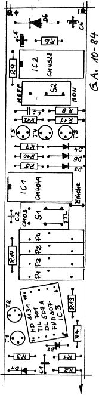

80-Bus Journal |
Juli/Aug./September 1984 · Ausgabe 3 |

Nascom Benutzer unterscheiden sich Gott Lob von den nervoesen ‚Arcade‘ Hackern, die mit erhoehtem Adrenanin Pegeln ganze Armeen von Invadern wegpusten. Computerspiele, wie sie in Spielhoellen vorkommen, haben sicherlich keine hohe Anziehungskraft fuer den Tueftler und Bastler. Eine andere Art von computerunterstuetzter Unterhaltung sind vielleicht die Spiele der Adverture Gattung. Dies sind Textpuzzles, die dem Spieler Zeit lassen zum Nachdenken und in irgenteiner Form dazu animieren, eine bestimmte ‚Gegend‘ zu erkunden. Wirklich neu, interessant und lustig sind die beiden Spiele, die es fuer eine ganze Reihe von Microcomputern gibt, nur durch ihre interne Komplexitaet und der unglaublichen Phantasie der Autoren. Jedes Adventure ist etwa 30 KByte lang (Maschinenprogramm), arbeitet mit einer ausgekluegelten Textkompression und kostet knapp 40 DM. Die Spielsituation kann jederzeit auf Cassette festgehalten werden (10 s). Soweit gleichen sich beide Spiele. Wer absulut nicht mehr weiter kommt im Spiel, kann mit einem Freiumschlag seine Probleme spezifizieren, und der Hersteller verspricht kostenlose Antwort. Doch nun zu den Storys:
Snowball ist ein Science Fiction Adventure mit ca 7000 (siebentausend) Positionen, Orte, Raeume und etwa 200 Schluesselwoerter. Die Eingabe ist aufgrund der hoehen Anzahl der Schluesselworte Klartext Englisch, wobei ein Interpreter aus dem Eingabestring die relevanten Teile sich heraussucht. Dieser Interpreter versteht sogar ‚IT‘, womit dann das Objekt gemeint ist, das zuvor im Text erwaehnt wurde. Alle Komandos koennen auf wenige Buchstaben abgekuerzt werden.
Die Geschichte, im Manual ausfuehrlich mit allen Hintergrundinformationen beschrieben, handelt von einem riesigen Transporter, der 200000 im Winterschlaf gehaltene Menschen viele Jahre zu eine Planeten Eden bringt, da die Erde am Ende ist. Man selbst spielt Kim Kimberley, eine Art Agent, der den Transport gegenueber allem Boesen schaetzen muss, und der dann automatisch aus seinem Winterschlaf (im ‚Freezer Coffin‘) aufwacht. Ziel ist es, moeglichst schnell zur Hauptkommandozentrale zu gelangen.
Ist der Umgang mit dem Vokabular erst einmal erfolgt, kann man sich wirklich vergnuegen. Da gibt es ein ‚scruffy robot‘ der staendig versucht das Schiff sauber zu halten, oder ein Paar gesichtsloser Androiden, die jedem Beamten alle Ehre machen wuerden, indem irgentwelche Formulare und Tickets getauscht werden muessen. Ebenfalls sollte man die Passagiere, besonders die Weiblichen, in Ruhe lassen !!!!!!!! (sonst ist man am Ende)
Die Moeglichkeiten um ‚Mist zu bauen‘ sind jedenfalls reichlich vorhanden und die Reaktionen treffend. Die Geschichte hat keine ‚mystischen‘ Elemente, sodass dem nuechternen Techniker dies wohl eher liegt. Man sollte sich an seine Schulphysik erinnern, bevor man mit dem Astronautenanzug in den Weltraum fiegt, sonst ‚erlebt‘ man diverse Tode.
Eigentlich dasselbe Programm, aber eine andere Geschichte. Mit einer grossen Uhr kann man etliche Zeitzonen, von der Steinzeit bis zur Zukunft, erreichen. In meinen kurzen Zeitreisen besuchte ich die Roemer im Amphitheater und wurde gleich fuer die Gladiatorenkaempfe einkassiert. Bei den Hoehlenmenschen ging’s mir nicht viel besser, die haben mit Knueppeln geschlagen. Insgesamt fehlt mir noch die richtige Idee das Ziel, die sieben Lord’s, je einer in einer Zeitzone, zu kriegen. Dieses Puzzle ist noch aufwendiger programmiert und noch schwieriger im Loesen der Puzzles.
Insgesamt bereiten diese Adventure eine Menge Spielfreude mit Niveau fuer relativ wenig Geld.
| Seite 25 von 52 |
|---|